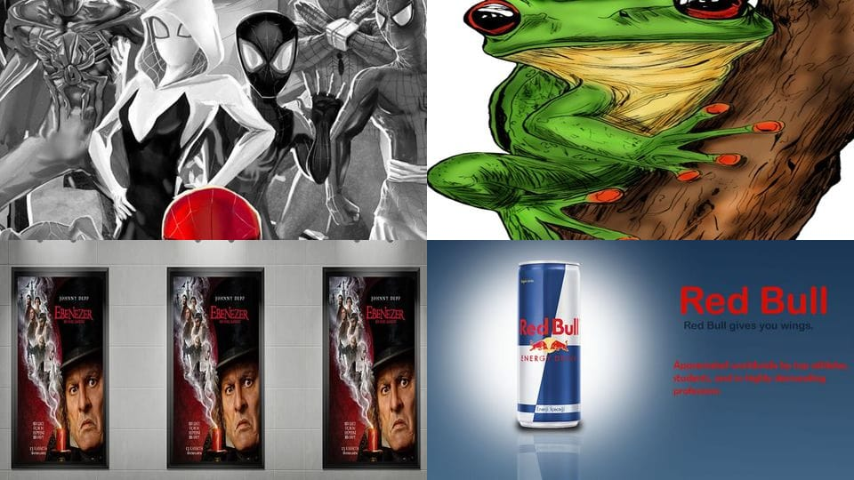
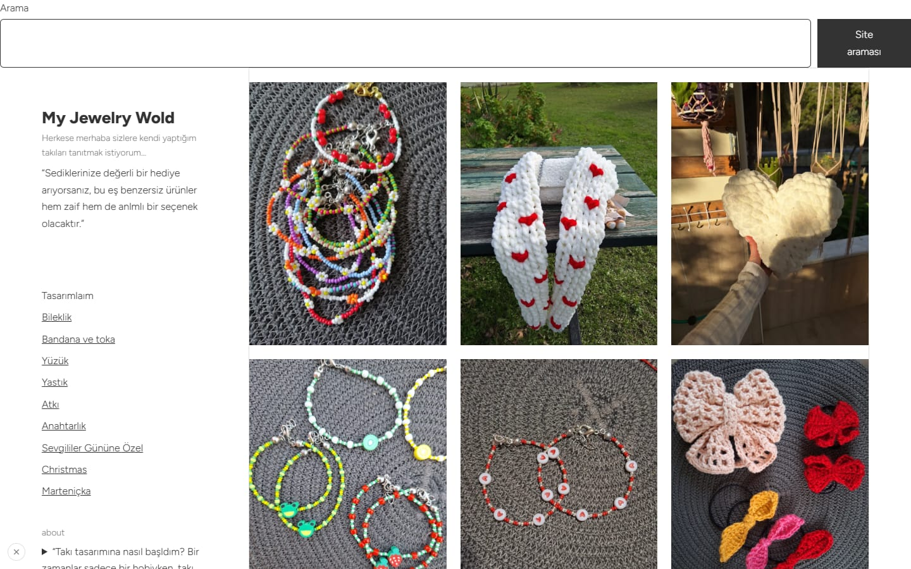
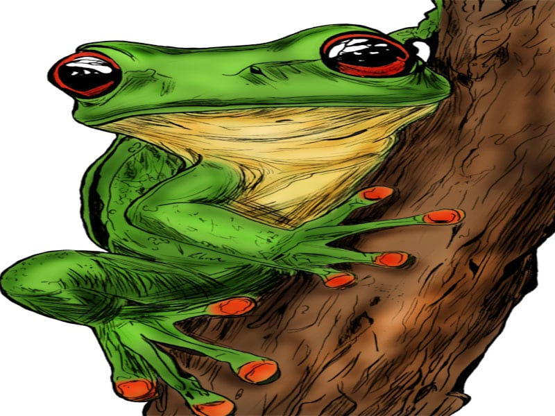

Hilal Esma Gündoğdu
Bilgisayar Programcılığı öğrencisiComputer Programming student
HakkımdaAbout
Ben Hilal Esma. Akdeniz Üniversitesi'nde Bilgisayar Programcılığı okuyorum. Bilişim Teknolojileri bölümünden bölüm birincisi olarak mezun oldum, IT ve muhasebe alanında staj yaptım, otelcilikte çalıştım ve kendi takılarımı tasarlıyorum. Grafik Animasyon dersinde Photoshop ile altı proje tamamladım ve WordPress ile iki web sitesi hazırladım. I'm Hilal Esma. I study Computer Programming at Akdeniz University. I graduated first in my Information Technologies department, completed an internship in IT and accounting, worked in hospitality and I design my own jewellery. In my Graphic Animation course I completed six projects in Photoshop, and I built two websites with WordPress.
Eğitim ve BaşarılarEducation & Achievements
Teknik bir lise eğitiminin ardından üniversitede yazılıma odaklanıyorum; öğrendiklerimi stajda gerçek sistemlerde kullandım. After a technical high school education I now focus on software at university, and I used what I learned on real systems during my internship.
-
–
Teknik Bilimler MYO · Bilgisayar Programcılığı, 1. sınıfVocational School of Technical Sciences · Computer Programming, 1st year
-
–
Bölüm BirincisiRanked 1st in IT Department
Okurcalar Çok Programlı Anadolu Lisesi · Bilişim TeknolojileriInformation Technologies
-
–
Stajyer: Bilgi Teknolojileri ve MuhasebeIntern, IT & Accounting
Web Tasarım Takı Tasarımı Çim Hokeyi Müzik & Keman Motosiklet Photoshop & Grafik Yazılım Geliştirme Web Design Jewelry Design Field Hockey Music & Violin Motorcycle Photoshop & Graphics Software Development
ProjelerProjects
Seçili çalışmalar Selected work
Her proje ayrı bir klasör. Ayrıntılar, görseller ve kullanılan teknolojiler projeler sayfasında. Each project is its own folder. Details, images and technologies are on the projects page.
Tüm projelerAll projects-
graphic animation -
wordpress 
-
web ui 

Hayatımdan kareler Moments from my life
Galeriye gitOpen the gallery


Mini Takı Atölyesi ✦Mini Jewelry Studio ✦
Bir taş seç; bileklikteki sıradaki boncuk o renge boyansın. Pick a stone and the next bead on the bracelet takes its color.
Bir taş seç, enerjini birlikte bulalım ✦
Ruh Haline Göre Plak ÇalarMood Record Player
Şimdi çalıyor: Kodlama & Odak
Çalma listeleri Spotify'dan yüklenir; dinlemek için Spotify hesabı gerekebilir. Playlists load from Spotify; listening may require a Spotify account.
Neler yapıyorum What I do
- 01Web tasarımWeb design
- 02WordPress
- 03YazılımSoftware
- 04Grafik animasyonGraphic animation
- 05Takı tasarımıJewellery design
- 06Teknik destekTechnical support
Son yazılar Latest posts
Tüm yazılarAll posts-
-

-